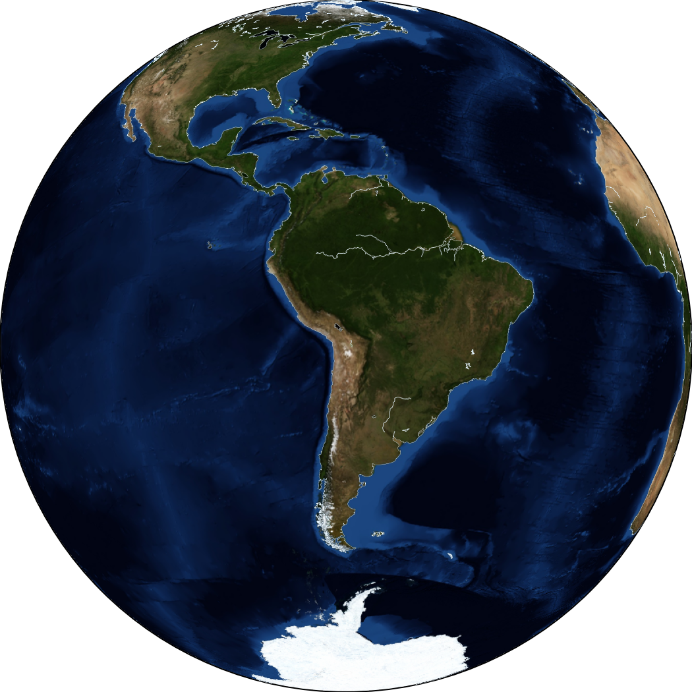

VIAJES APOSTÓLICOS DESTACADOS
Viajes del Papa León XIV
Elige un destino en el globo para descubrir sus mensajes y ver los videos de la visita.

Viaje apostólico · 6 al 17 de noviembre de 2026
SUDAMÉRICA 2026
Papa León XIV en Perú
11 al 16 de noviembre de 2026
Encuentros con jóvenes, comunidades, familias y fieles del Perú.
PALABRAS DEL SANTO PADRE
Leer discurso oficial ↗
Ver video en YouTube ›
Itinerario oficial del viaje a Sudamérica: Santa Sede ↗
E-BOOK ESPECIAL
Homilías, oraciones y discursos del Papa León XIV
Libro digital con los textos del Papa León XIV durante su viaje apostólico a España.
CLIPS DESTACADOS
Visita del Papa León XIV
Mira momentos breves y especiales de las visitas del Santo Padre.
Mensaje especial a los jóvenes
▶ Ver en YouTubeEncuentro con familias y comunidades
▶ Ver en YouTubeOración por la paz en el mundo
▶ Ver en YouTube
📅
El Papa León XIV en Sudamérica
Revive los encuentros de Uruguay y Argentina y acompaña la visita del Santo Padre al Perú.